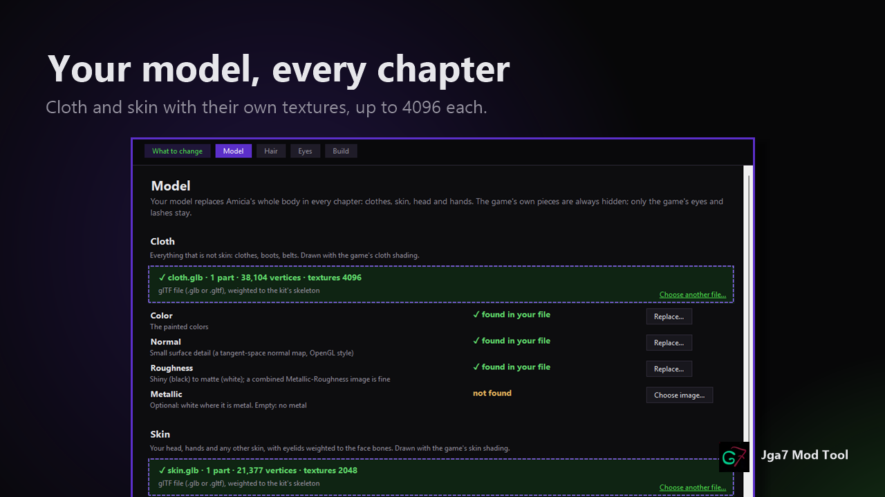
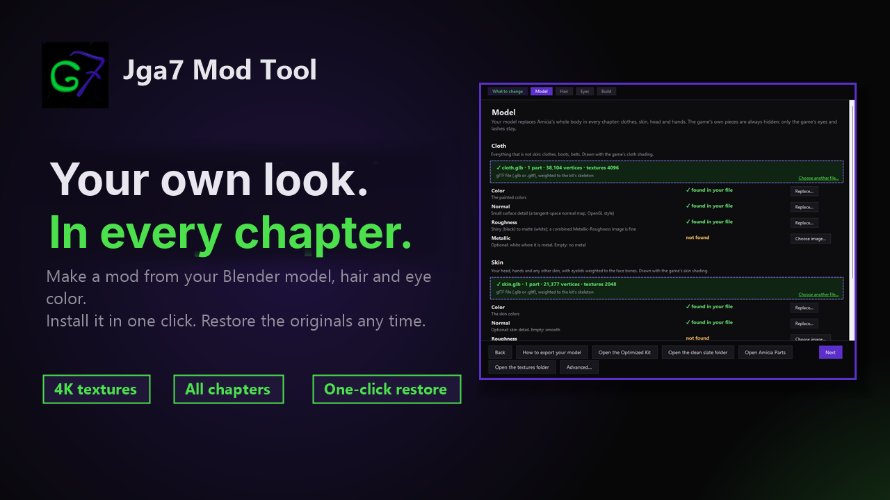
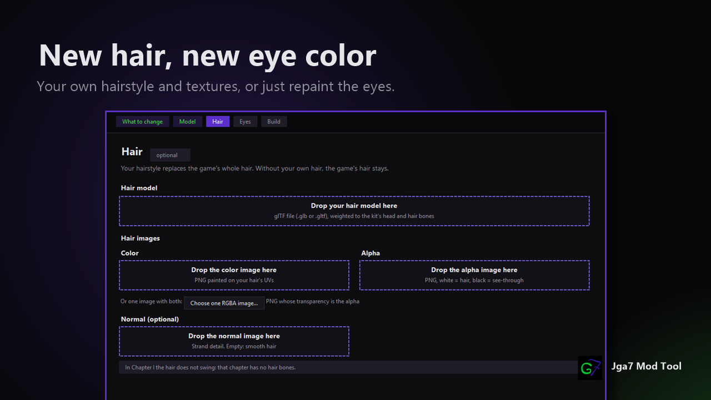
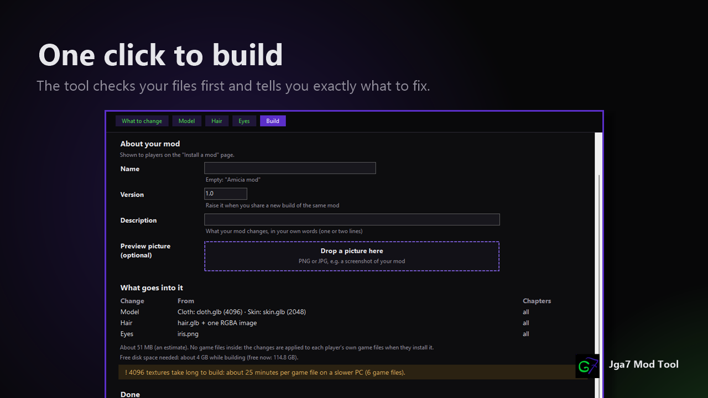
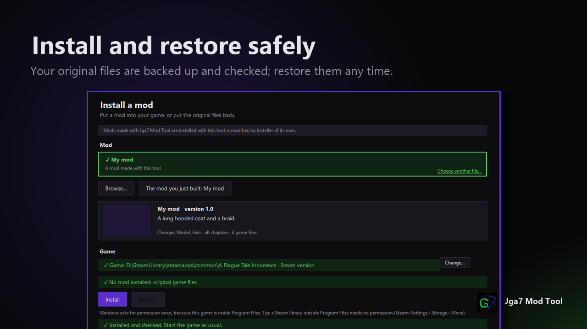
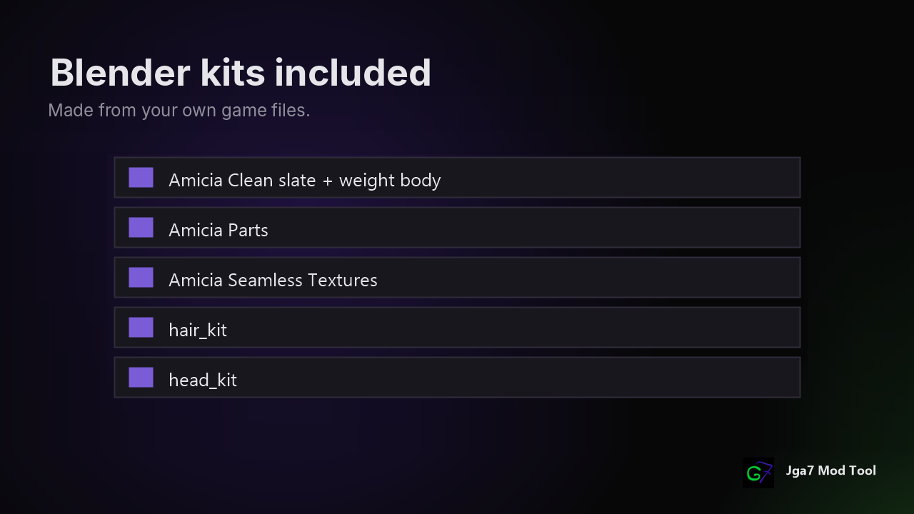
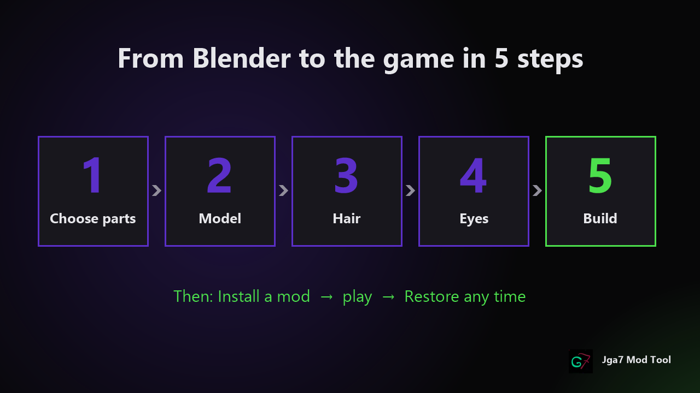

Your model, the whole body
Your Blender model replaces Amicia's whole body in every chapter: clothes, skin, head and hands. Cloth and Skin each get their own textures, up to 4096.
Make a mod from your Blender model, hair and eye color. Install it in one click. Restore the originals any time.

A Windows tool that makes and installs mods for Amicia in A Plague Tale: Innocence (the Steam version).

Your Blender model replaces Amicia's whole body in every chapter: clothes, skin, head and hands. Cloth and Skin each get their own textures, up to 4096.

Your own hairstyle with its own Color and Alpha images, in all chapters. A new eye color from one image.

The tool checks your files first and tells you exactly what to fix. The finished mod holds only your changes.

Drop a mod folder or .zip, then Install. Your original files are saved first and every file is checked. Restore puts the originals back.

Made from your own game files: a clean slate with Amicia's skeleton, her original parts, seamless textures, hair and head kits, and the 0 Optimized Kit.

Then: Install a mod › play › Restore any time.
Nothing else to install: unzip the folder anywhere (not inside the game folder) and double-click JgaModTool.exe.
 Home
Home What to change
What to change Model
Model Model (textures)
Model (textures) Hair
Hair Eyes
Eyes Build
Build Building
Building Mod ready
Mod ready Install a mod
Install a mod Advanced
Advanced How to export
How to export Notes
Notes Replace a mod
Replace a mod About
About